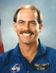

Lyndon B. Johnson Space Center
Houston, Texas 77058
|
National Aeronautics and Space Administration Lyndon B. Johnson Space Center Houston, Texas 77058 |
 |
Biographical Data |
||
Thomas J. Hennen
(Chief Warrant Officer 4, U.S. Army, ret.)
Payload Specialist Astronaut
PERSONAL DATA: Born August 17, 1952, in Albany Georgia, but considers Columbus, Ohio to be his hometown. Tom is married to the former Sherri Wise of Houston, Texas. Together they have six children: Kristopher; Jessie; Karl; Kyle; Kendall; and Karli. He enjoys playing basketball, bowling, sky diving, dancing, snorkeling, scuba diving, traveling, and listening to music. His mother, Antoinette L. Hennen, resides in Columbus, Ohio. His father, Carl H. Hennen (US Air Force, CMS) is deceased.
EDUCATION: Graduated from Groveport-Madison High School in Groveport, Ohio, in 1970. He attended Urbana College in Urbana, Ohio from 1970-1972 on both an academic and athletic scholarship. Tom completed the following military courses of instruction: U.S. Army Imagery Interpretation Course, 1973; U.S. Army Administrative Specialist Course, 1973; Distinguished Graduate of the III Corps and Fort Hood Leadership Course, 1974; U.S. Army Automatic Data Processing and System Analysis Course, 1974; Honor Graduate of the 5th U.S. Army Non-Commission Officers Academy, 1975; U.S. Marine Air Ground Intelligence System Operators Course, 1976; Distinguished Graduate of the Defense Sensor Interpretation and Application Training Program, 1976; Distinguished Graduate of the U.S. Air Force Europe (USAFE) Advanced Imagery Interpretation Course, 1978; the Analytical Photogrammetrical Positioning System Operators course, 1978; National Imagery Interpretability Rating System Instructors Course, 1979; U.S. Army Intelligence Analyst Course, 1979; the Computer-Aided Tactical Information System Operator and Supervisor Course, 1980; U.S. Army Pre-Commission Course, 1980; U.S. Army Warrant Officer Orientation Course, 1981; the Advanced Synthetic Aperture Radar Analysis Course, 1981; U.S. Army Infantry Officer Basic Course, 1982; U.S. Army Warrant Officer Senior Course, 1982; U.S. Army Military Intelligence Officer Basic Course, 1983; U.S. Army Military Intelligence Officer Advanced Course, 1984; U.S. Army Armor Officer Basic Course, 1985; the Joint Space Intelligence and Operations Course,1986; U.S. Army Signal Officer Basic Course, 1986; U.S. Army Warrant Officer Advanced Course, 1986; the Tactical Exploitation of National Space Capabilities (TENCAP) Course, 1987; and NASA Payload Specialist Astronaut Training, 1991.
SPECIAL HONORS: Awarded the Defense Superior Service Medal (DSSM); three U.S. Army Meritorious Service Medals (MSM); the U.S. Army Commendation Medal (ARCOM); two U.S. Army Achievement Medals (AAM); Three U.S. Army Good Conduct Medals (AGCM); the National Defense Service Medal (NDSM); two U.S. Air Force Outstanding Unit Awards (AFOUA) and the NASA Space Flight Medal.
Chief Hennen was selected on numerous occasions as Soldier and Non-Commissioned Officer (NCO) of the Quarter/Year by the various commands and agencies to which he was assigned during his enlisted career.
Chief Hennen was the first and remains the only Warrant Officer within the U.S. Army and the Department of Defense to have been selected as a member of a Space Shuttle flight crew.
EXPERIENCE: Chief Hennen served over 23 years in the imagery intelligence field. He received extensive technical training and experience as an operational imagery analyst at both the national and tactical levels; experience as an instructor; training, force, and combat developer; extensive material development and acquisition management experience - all of which combined to make him one of the most qualified imagery intelligence technicians within the Department of Defense (DOD).
From 1973 to 1975, he was assigned to the 163rd Military Intelligence Battalion, Fort Hood, Texas. During the assignment he participated in the planning, development, and conduct of major operational and force development tests and evaluations in direct support of U.S. Army and III Corps combat requirements. A small sample of these tests include: the evaluation of the effectiveness of various firing methodologies of the Cobra (AH-1) attack helicopter; the testing and evaluation of new camouflage netting, uniforms, and painted vehicles now in use throughout the Army; the initial U.S. Army Remotely Piloted Vehicle testing; phosphorous smoke tests; antenna mast tests; and heat loss/energy conservations tests.
During 1976 through 1978, Hennen was assigned to the 203rd Military Intelligence Detachment. While there, he served as Operations NCO and the Chief of both the Tactical and Strategic Exploitation Divisions, providing imagery collection, exploitation, and intelligence support to the 1st Calvary Division, the 2nd Armored Division, the 6th Armored Calvary Regiment, and Headquarters III Corps.
Mr. Hennen had various assignments from 1979 to 1980.
Chief Hennen was assigned to the U.S. Army Intelligence Center, Fort Huachuca, Arizona, from 1981 through 1986. He was the project officer for the Imagery Intelligence (IMINT) Tactical Exploitation of National Space Capabilities Program (TENCAP), responsible for developing all training requirements, concept, and doctrine. His efforts culminated in the production of multi-million dollar training programs, supporting the fielding of a variety of new systems, operating at both the tactical and national intelligence levels. During this assignment, Hennen was appointed as Department of the Army (DA) IMINT subject matter expert. He developed and managed a major project for the Office of the Secretary of Defense (OSD); he authored the U.S. Army Radar Training Plan; participated in the development of the TENCAP Systems Management Model; was selected as a member of a Defense Intelligence Agency (DIA) team that developed the Joint Space Intelligence and Operations Course; and he represented DA on the DIA Intelligence Training Equipment (ITE) Subcommittee.
In 1986, Hennen was selected by the Commanding General of the U.S. Army Intelligence Center to represent him within the U.S. Army Space Program Office (ASPO) in Washington, D.C., for those matters pertaining to TENCAP requirements, concept development, and the doctrinal and operational employment of TENCAP systems. Additionally, he was a member of various DA, DOD, and national intelligence community working groups and subcommittees involved in TENCAP program activities. Hennen was personally responsible for managing the development and successful fielding of a state-of -the-art IMINT system to both the European and Pacific Theaters of Operations. Chief Hennen’s efforts at ASPO were instrumental in the efficient evolution of 5 major TENCAP systems with a Life Cycle Cost in excess of $2 billion dollars, providing critical and timely intelligence in support of the requirements of the tactical commander on the extended battlefield.
Chief Hennen was selected as a payload specialist astronaut candidate in September 1988 and moved back to the “Home of Military Intelligence,” Fort Huachuca, Arizona, during March 1989 to begin Terra Scout payload operations training. During August 1989, Tom was selected as the primary payload specialist for the Terra Scout experiment manifested on STS-44. He reported to NASA in 1990 to begin Payload Specialist Astronaut training.
CWO Hennen became the first Warrant Officer in space, flying aboard the Space Shuttle Atlantis (STS-44), which launched from Kennedy Space Center, Pad 39A at 6:44PM (EST), November 24, 1991. He orbited the Earth 109 times traveling 2.9 million miles, before landing at Edwards Air Force Base, California on December 1, 1991.
Mr. Hennen retired from the U.S. Army in December 1995. He is the co-founder and currently serves as the Executive Director of the Atlantis Foundation, a non-profit organization that is both an advocate and a service provider for people with various developmental disabilities. The Foundation was a dream and now the reality of his devotion to bring about real change, specifically to the severely mentally challenged. Tom, who after viewing our planet from a totally different perspective, has rededicated his life to helping people, especially children who cannot help themselves. He is convinced, now more than ever before, that the future of our planet will be shaped by all our people.
AUGUST 2008
This is the only version available from NASA. Updates must be sought direct from the above named individual.
{kind=link}